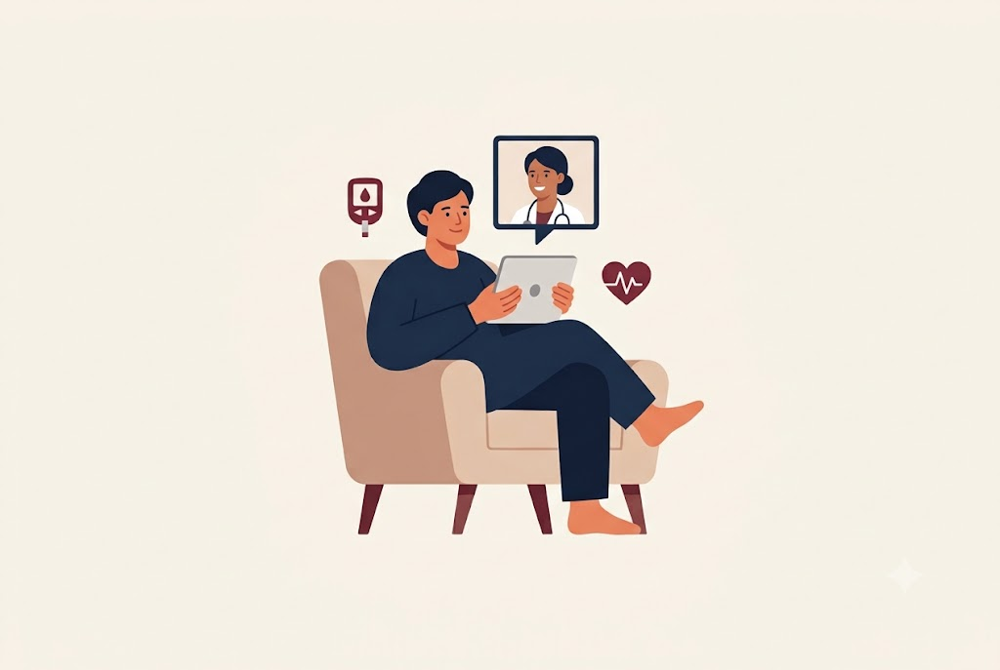

Կապ բժշկի հետ
Այս բաժինը հնարավորություն է տալիս կապ հաստատել բժիշկի հետ և ստանալ տեղեկատվություն դիաբետի կառավարման վերաբերյալ։ Օգտագործողները կարող են ուղարկել իրենց հարցերը և ստանալ մասնագիտական խորհրդատվություն սննդակարգի, գլյուկոզի վերահսկման և ընդհանուր առողջական վիճակի հետ կապված։
Կապ հաստատել ›